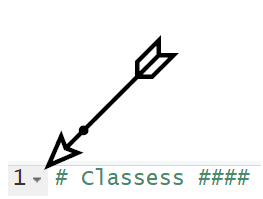
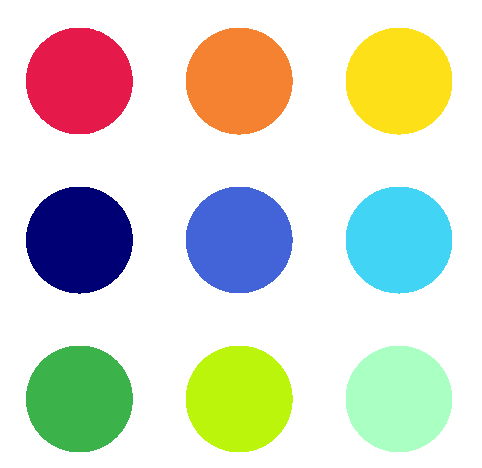

4 R objects
In Chapter 2 we learnt how to create a variable. This consisted of assigning (<-) an object a name. In this chapter we will learn about R objects. There are two major R terminologies to learn to fully understand R objects.
- Class: An R object will have a specific class. The class determines what the object is. It could be numbers, text, or other types of classes.
- Data structure: This determines the structure of an R object.
The rest of today’s plan is to learn about classes and data structures.
4.1 Code sections
Today, and for the rest of the course, you will use code sections in your R scripts to separate sections in this book.
First set your working directory to the course directory, create a script, and save it as “2-Objects.R”.
Next create a code section at the top of this script called “Classes”.
In other words have the below at the top of your script:
# Classes ####4.2 Classes
There are six basic classes in R (Also known as the atomic classes).
The four we will learn are:
- Integer
- Double
- String
- Logical
There are also the classes complex and raw.
4.2.1 Numeric

Numeric classes come in two types, integer and double. Integers and doubles are almost identical. However, doubles contain decimal point information whilst integers do not.
Most of the time you will only need to know if your data is numeric and you will not need to worry about doubles or integers. The exception being if you are working with decimals and your decimals are not showing up. This probably means that your object has the integer class.
Type and run the following, using the provided annotation to understand what the commands are doing.
Note: Remember you can copy and paste old script.
Use the function class() to show the class of an R object:
#Numeric
#Class of 2
class(2)
#class of 3.14
class(3.14)
#class of 6
class(6)Create a variable with the name “pie”” containing the numeric 3.14:
#Creating a variable using the assignment operator
pie <- 3.14Use the functions as.numeric(), as.integer(), and as.double() to print the variable as a numeric, as an integer, and as a double:
#Printing out previously made variable as numeric, integer, and double
as.numeric(pie)
as.integer(pie)
as.double(pie)You can put a function as the variable within a function.
Below we will first check the class of the object within the “pie” variable. You will note that the functions we used previously did not permanently change the variable’s object. We can only change a variable if we use the assignment operator.
Then we will check the class of the object as it is altered by the various as. functions.
#Checking the class of our variable
class(pie)
class(as.numeric(pie))
class(as.integer(pie))
class(as.double(pie))Note: Remember to ask for help if you need it!
On a side note, R comes with some inbuilt variables such as pi:
#The R pi is equal to 3.141593
pi
#assign pi to 3.14
pi <- 3.14
#print out pi to see you have changed the variable's object
pi
#in this case if you want the original R pi object back, we can remove the one we made
rm(pi)Have you been annotating your scripts?
4.2.2 Logical

Logical values can be TRUE or FALSE.
They are primarily used when comparing objects.
Run the below commands to output Logical values using the various logical operators.
Note: when ! is used in operators it means “not”. When used, ! always goes at the front of the operator.
#Logical
# 2 less than 4
2 < 4
# 2 greater than 4
2 > 4
# 2 less than or equal to 4
2 <= 4
# 2 greater than or equal to 4
2 >= 4
# 2 equal to 4
2 == 4
# 2 not not equal to 4
2 != 4It is probably not immediately obvious how useful logicals are, but you’ll see their usefulness later in the course.
4.2.3 String

Strings are text and can be modified in R in ways you would normally want to modify text. They are called strings as they are strings of characters. Strings are flanked by quote marks. Double quotes ("") are preferred but single quotes can also be used ('').
Type and run the below examples to get some practice with strings.
A string object can consist of a string containing one character:
#String
one_character_string <- "A"
one_character_stringA string object can consist of a string containing multiple characters:
word_string <- "alphabet"
word_stringA string can contain all the different characters and any number of them. The only exception is that if you try to put a double quote in your string it will cause an issue.
long_string <- "Strings can be long and contain more than letters. \\.("
long_stringA string doesn’t need letters, it can consist of only numbers. Note the terms string and character can be used interchangeably.
number_string <- "1066"
number_string
class(number_string)You can convert a numeric to a string/character.
number <- 1066
numeric_to_string <- as.character(number)
numeric_to_string
class(numeric_to_string)An appropriate string can be converted to a numeric. This is useful as mathematical operators will not work with strings.
#will get an error as strings and maths don't mix
"6" - 3
#will work as maths and numerics work
as.numeric("6") - 4
#Below will not work as only strings containing numbers can be converted to numeric
as.numeric("not_a_number_12")You can use certain logical operators to compare strings though:
"character" == "character"
"1066" != "character"
"numeric" == "string"The paste() function is very useful to combine two or more strings into one.
paste("The following is a string:", long_string)
paste(number_string, "and the", word_string)
#By default paste will put a space (sep = " ") between each string you provide
#You can use the sep option to specify your own
paste("However", " this is separated by a comma", sep = ",")
#Or you can make it so there is no separator
paste("no separator",numeric_to_string, sep = "")
#Alternatively you can use paste0()
#Where there is no separator by default (sep ="")
paste0("no separator",numeric_to_string)4.3 Code section continued
After all that you will have some nice code and annotations in your script editor for the Classes code section.
Making a code section is not very useful until you have multiple code sections. To show this create a new code section at the bottom of your script called “Data structures”. This new code section will be used for the next section.
# Data structures ####With the new code section created we can now see why code sections are so useful. Go to the text that denotes the first code section (“Classes”). Look between the numbers on the left that signify the line number, and the text. You will see an arrow pointing downwards. You can click that arrow and it will collapse the code section. Click the arrow, now pointing right, and it will expand the code section. This is super useful so you can hide code sections in your script that you don’t currently need to look at.

With the “Classes” code section collapsed let us continue to the next section. There will be less annotations in this book as I expect you will make your own now.
4.4 Data structures
Data structures describe how data is structured in an object. We will go into 3 main types of data structures.
- Scalar
- Vectors & Lists
- Matrices & Data frames
4.4.1 Scalar
A scalar consists of one value in an object. This can be one string, one numeric, one logical etc. We have only been working with scalars thus far but this is about to change.
4.4.2 Vectors & Lists

A R object can hold multiple values. Many data structures can do this with the simplest being a vector.
A vector can be created with the c() function. This function will combine the provided objects into a single vector or list.
Vectors and lists are both 1-dimensional data structures. Vectors can only contain one class (homogeneous) whilst lists can contain multiple (heterogeneous). There is more to lists but we will not go into them.
Run the following commands to produce variables which contain vectors.
number_vec <- c(1,2,4,8,16)
number_vec
number_series_vec <- 1:6
number_series_vec
animals <- c("Whale","Seal","Hedgehog","Mouse","Owl","Squirrel","Vole","Shrew")
animalsElements of a vector can be accessed through their indices:
birds <- animals[5]
birds
aquatic <- animals[1:2]
aquatic
rodents <- animals[c(4,6,7)]
rodents
mammals <- animals[-5]
mammalsYou can use operators and functions on a vector. When you do each scalar within the vector will be acted upon.
number_vec - 1
number_vec * 2
log(number_vec)
length(rodents)Some functions are specifically used for vectors:
mean(number_vec)
summary(number_vec)We can also test the values within vectors:
aquatic == "Whale"
number_vec > 4
number_vec[number_vec > 4]The paste() function can be used to paste string scalars to other string scalars or to string vectors:
paste("Animals", animals)
bird_or_mammal <- c("mammal","mammal","mammal","mammal","bird","mammal","mammal","mammal")
paste(animals, bird_or_mammal, sep = ":")
paste(animals, " is a ", bird_or_mammal, sep = "")4.4.3 Data frames & Matrices

Data frames & matrices are 2-dimensional data structures as they have rows and columns.
A matrix only contains 1 class (homogeneous). A data frame can contain multiple classes (heterogeneous), but each column can only contain one class.
Most of the time data frames and matrices can be treated the same. Because of this I generally use data frames and so we will focus on them.
R comes with a set of pre-loaded data. If you are interested you can use the function data() to see the full list.
We will have a quick look at the dataset “mtcars”. This is a data frame containing information on various cars. To look at the data frame in the console window run the below.
mtcarsTo get a better look save the data frame as a variable. The above shows the info in the console window. However we can have a better look at it in RStudio if we save it as a variable in our environment and then click the variable on the Environment pane of the “environment and history” window.
cars_info <- mtcarsNow the variable will be listed in your Environment pane in the “environment and history” window . Click on the name “cars_info” in the Environment pane. A tab in your script editor will open so you can have a good look at the contents of the data frame.
When you are ready, close the “cars_info” tab and remove the variable with the below command.
rm(cars_info)Now it is time to create our own data frame.
First we will create three variables containing vectors. These will be our three columns.
Crab <- c(10,1,1)
Oystercatcher <- c(5,6,4)
Starfish <- c(3,3,7)Now let us create the data frame.
#Using the function data.frame to create a data frame
beach_df <- data.frame(Crab,Oystercatcher,Starfish)Look at the variable “beach_df” (it is useful to use “df” in variable names to signify it is a data frame) and you will see that each vector has become a column. The variable names have become the column names (this is why we used capital letters in the variable names).
You can think of data frames in three different ways:
- A list of columns
- A list of rows
- A table
Look at the column and row names with two new functions.
colnames(beach_df)
row.names(beach_df)We can use the function row.names() and the assignment operator to change the row names to something more useful.
row.names(beach_df) <- c("Formby","West Kirby","Crosby")Now look at your “beach_df” data frame to see the difference.
That is quite a lot to go through so let us reinforce it all with exercise!